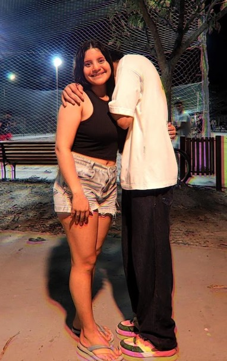
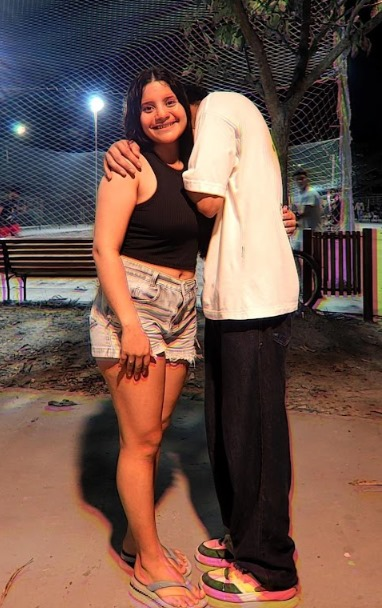

Reencontro com Geh
Página 9 - Agradecimentos
A foto que guarda a nossa história
 

Essas fotos que a gente tirou, colados de corpo todo, não são apenas imagens. São pedaços vivos do que a gente construiu juntos, fragmentos que guardo com todo o carinho dentro do peito.
Elas falam de mais do que aquele instante congelado no tempo. Contam histórias de encontros, desencontros, de risadas que ecoaram por horas, de conversas silenciosas e de todo aquele amor que nunca se abalou, mesmo com a distância e as mudanças inevitáveis da vida.
Cada detalhe ali — o jeito que nossos corpos se encaixam, a tranquilidade dos nossos rostos, a certeza silenciosa que a gente carrega um pelo outro — é um testemunho da força da nossa amizade e do amor que só cresce.
Essas fotos mostram que, mesmo depois de tanto tempo sem se ver, mesmo com tudo que mudamos e vivemos, o que existe entre nós não só resistiu, mas floresceu. Virou raiz, virou casa, virou porto seguro.
Não foi só um clique, foi um abraço que atravessa a distância, um olhar que reafirma tudo o que sentimos e não precisamos explicar. São provas vivas de que somos inseparáveis, parceiros de vida, amigos que se amam mais a cada dia.
Quando olho essas fotos, sinto tudo de novo: a alegria, a paz, o conforto de saber que, não importa onde a vida nos leve, sempre estaremos juntos, sempre vamos cuidar um do outro.
Por isso, essas imagens são muito mais do que lembranças. São a nossa história, o nosso laço eterno — do ontem, do agora e de todos os amanhãs que ainda vamos viver lado a lado.